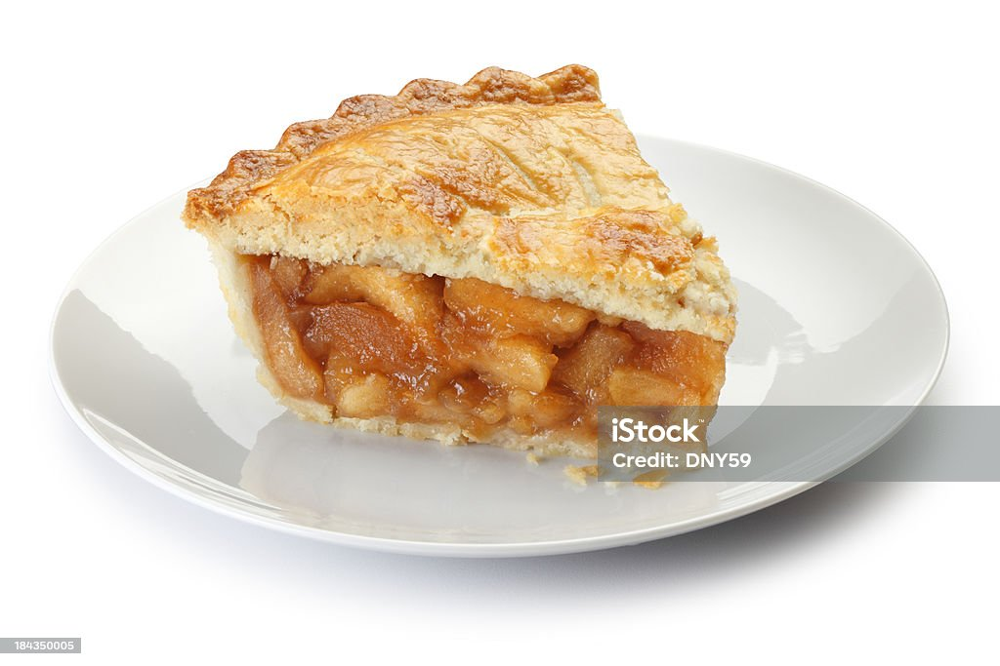

- HTML
- CSS
- JavaDcript
Perfect Apple Turnover
Our homemade apple pie is sure to be the best apple pie recipe you've made to
date.
For starters, you can make this warm, cozy, classic dessert in three
simple steps, and it's made with the ultimate baking shortcut: Pillsbury™
Pie Crusts.

Serve up this easy apple pie and enjoy the most classic dessert with family
and friends. Whether you bake it for a holiday, a potluck or as a special
weekend treat, this timeless recipe is guaranteed to spark joy.